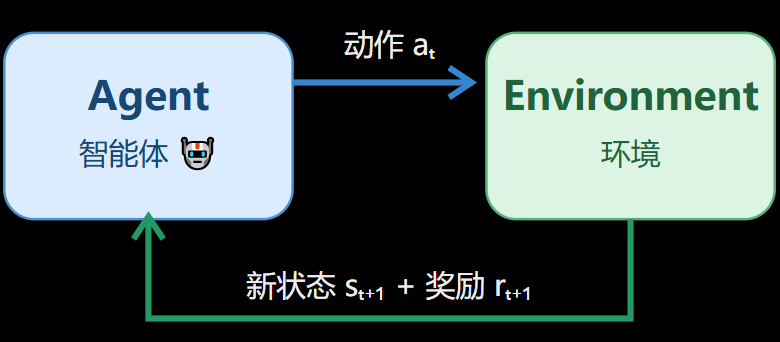

强化学习基础认知
强化学习基础认知
认识强化学习、Agent、环境、状态、动作、奖励、回合、回报
强化学习的定义
智能体(Agent) 通过与 环境(Environment) 不断交互，根据环境给予的 奖励(Reward) ，学习一种能够最大化长期累积奖励的行为 策略(Policy)。
Interaction Loop

强化学习算法流程： 观察 -> 行动 -> 获得反馈 -> 学习 -> 再次行动
- $s_t$：第$t$个时间步的状态
- $a_t$：第$t$个时间步采取的动作
- $r_{t+1}$：执行动作后得到的奖励
一、状态(State)
智能体所处环境在某一时刻的情况
数学符号： $$s_t$$ 其中： - $s$是State的缩写 - $t$表示当前时间步
二、动作(Action)
动作是智能体在某个状态下做出的选择
数学符号： $$a_t$$ 其中： - $a$是Action的缩写
如果A={1,2...}使用离散值表示动作，那么A是智能体所有允许动作构成的集合，即 动作空间(Action Space)。
强化学习中的动作通常分为两种类型： 1. 离散动作 动作数量有限，能逐个列举 例如：向上、向下，或者游戏中的跳跃、攻击
- 连续动作 动作可以在某个数值范围内连续变化 例如：方向盘转动角度、机械臂关节控制量、机器人的电机输出
三、奖励
奖励是环境对智能体行为结果提供的数值反阔
数学符号： $$r_{t+1}$$ 其中： - $r$是Reward的缩写
奖励可以是正数、负数、0
当前奖励高，不代表这个动作一定对未来有利
四、策略(Policy)
智能体在某个状态下，决定采取什么动作的规则
策略不是动作，而是采取动作的规则，是从状态到动作选择规则的映射。强化学习的核心目标，是找到能带来较高长期回报的策略。
数学符号： $$\pi$$
两种不同的策略 1. 确定性策略 在某个状态下，策略总是选择同一个动作 例如： $$a=\pi(s)$$
- 随机策略 在某个状态下，机器人按照一定概率选择不同动作 例如： $$\pi(a|s)=P(A_t=a|S_t=s)$$ 读作： 在状态$s$下，选择动作$a$的概率
此处|表示“在......条件下”
五、回合(Episode)
一个回合通常是指智能体从某个初始状态开始，经过一系列交互，直到任务终止的完整过程
不是所有强化学习任务都有自然的终点。例如，持续运行的设备控制可能属于连续任务
六、回报(Return)
Reward和Return有什么区别： Reward 是某一步得到的即时奖励，Return 是从某个时刻开始的未来累计奖励
通常使用$G$表示回报
在有限回合中，未折扣回报可以写为： $$G_t=\sum_{k=t+1}^{T}r_k$$
为什么需要折扣因子？ 在强化学习中，经常使用折扣回报： $$ G_t=r_{t+1}+\gamma r_{t+2}+\gamma^2 r_{t+3}+... $$ 其中： - $\gamma$为折扣因子
$\gamma$用于控制未来奖励在当前回报中的权重： - $\gamma=0$：只考虑下一步奖励 - $\gamma=0.5$：越远的奖励权重衰减越快 - $\gamma=0.99$：较远的未来奖励仍然有较高权重 - $\gamma=1$：不进行折扣，适用于累计奖励有定义的情况
当折扣因子较小时，智能体更重视近期奖励；当折扣因子接近1时，较远未来的奖励仍然具有较大影响
对于过程序列： $$ s_0,a_0,r_1,s_1,a_1,r_2,s_2,\dots $$ 该序列称为一条轨迹(Trajectory)
奖励、回报与折扣因子
一、奖励函数
在强化学习中，环境根据任务规则，在每次交互后返回奖励。我们通常把决定奖励数值的规则称为奖励函数(Reward Function)
简化表示为： $$ r_{t+1}=R(s_t,a_t,s_{t+1}) $$
二、累计回报
是用来衡量从当前时刻开始，未来能够累计获得多少奖励的指标
一般把未折扣的回报写成： $$ G_t=\sum_{k=0}^{T-t-1}r_{t+k+1} $$ 其中： |符号|含义| |:---|:---| $G_t$|从时间步$t$开始的回报 $r_{t+k+1}$|未来某一步收到的奖励 $T$|回合终止的时间步 $k$|用来依次遍历未来奖励的计数变量
三、折扣因子
强化学习使用折扣因子控制未来奖励相对于近期奖励的重要程度
记作： $$ \gamma $$
通常： $$ 0<=\gamma<=1 $$
当$\gamma$越小，未来奖励权重衰减越快；当$\gamma$越接近1，未来奖励的权重衰减越慢
最常见的折扣回报公式是： $$ G_t=\sum_{k=0}^{\infty}\gamma^kr_{t+k+1} $$
折扣因子不是简单地改变奖励的大小，而是可能改变智能体认为哪条路线更值得选择
四、回报公式的递归推导
已知折扣回报公式： $$ G_t=r_t+1+\gamma r_{t+2}+\gamma^2 r_{t+3}+\dots $$ 把第一个奖励r_{t+1}单独保留，其他项提取一个$\gamma$： $$ G_t=r_{t+1}+\gamma (r_{t+2}+\gamma r_{t+3}+\dots) $$ 其中括号中的部分是下一个时间步开始的回报$G_{t+1}$
因此： $$ G_t=r_{t+1}+\gamma G_{t+1} $$
由此得出： 当前回报=当前收到的奖励+折扣后的未来回报
决策方式
两种不同的决策方式： 1. 利用(Exploitation)：选择当前看来收益最高的动作 2. 探索(Exploration)：尝试尚不确定的动作，获取更多信息
强化学习的难点不只是找到好动作，还要在探索与利用之间取得合理平衡。
首先要探讨的问题是如何估计一个动作的好坏？
一个最简单的方法是计算动作的样本平均奖励
一般写作： $$ Q(a)=\frac{动作a获得的奖励总和}{动作a被选择的次数} $$
如果一个动作从未尝试过，我们就没有其样本平均奖励， 因此智能体面临选择： 是继续选择当前估计值最高的动作，还是尝试信息不足的动作
三种决策方法
三种决策方法包含怎么样选择利用和探索
一、贪心策略(Greedy)
每次都选择当前估计奖励最高的动作 优点是简单，能够充分利用已经学到的信息 缺点是可能过早认定某个动作最好，错过其他潜在的优质动作
例如有动作A、B、C，假如B只尝试过依次，恰好得到很高的奖励； C还没有充分探索。贪心策略可能一直选择B，而不尝试C
这叫过早利用
二、随机探索(Random Exploration)
随机探索会随机选择动作，而不完全依赖当前估计值 例如对于A、B、C三个动作，三个动作的选择概率分别为： $$ P(A)=P(B)=P(C)=\frac{1}{3} $$ 该方法有利于收集不同动作的信息，但如果长期完全随机，就可能反复选择奖励很低的动作
三、$\epsilon$-greedy策略
核心规则： - 以概率$\epsilon$进行探索，随机选择一个动作 - 以概率$1-\epsilon$进行利用，选择当前估计奖励最高的动作
可用简化表示为： $$ \begin{cases} 随机选择动作 & 概率\epsilon \ 选择当前最优动作 & 概率1-\epsilon \end{cases} $$ 这里$\epsilon$是探索率， 在实际强化学习中，其值可以变化
接下来将编写第一个强化学习程序，见 老虎机